Trading-Übersicht
Stand: 23.07.2026 13:27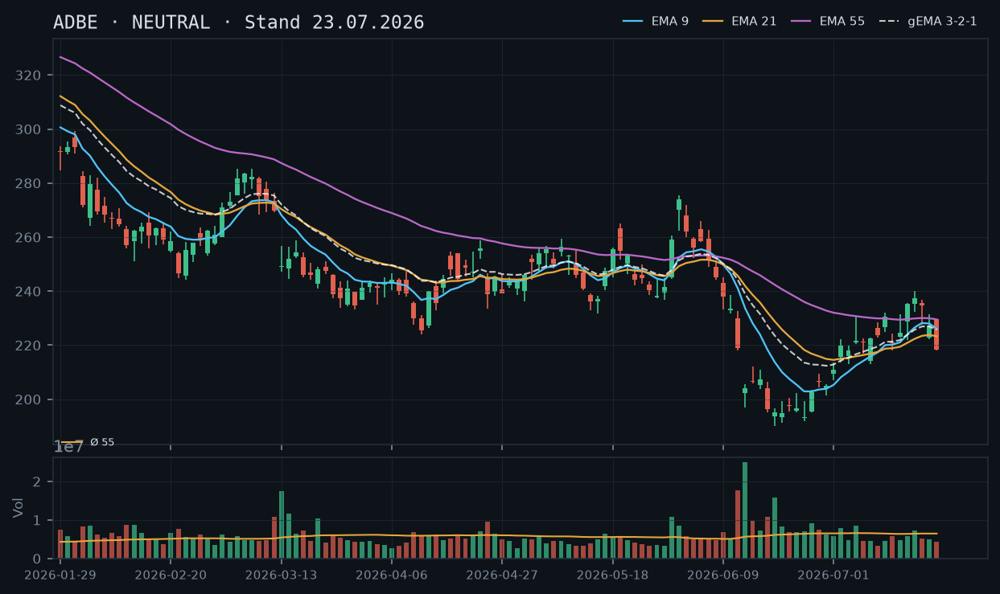
ADBE hat die gesamte Erholung seit dem Juli-Tief in zwei Tagen abgegeben – Kurs unter EMA9/21, gema_321 dreht ab, der Short Call 250 (1 DTE, Preis 0.06) ist wertlos und läuft morgen aus; kein neues Setup mit vertretbarem CRV.
CRV Kein valides Setup: Kurs zwischen Support 212.9 und Widerstand 229–232, CRV zu gering für direktionalen Trade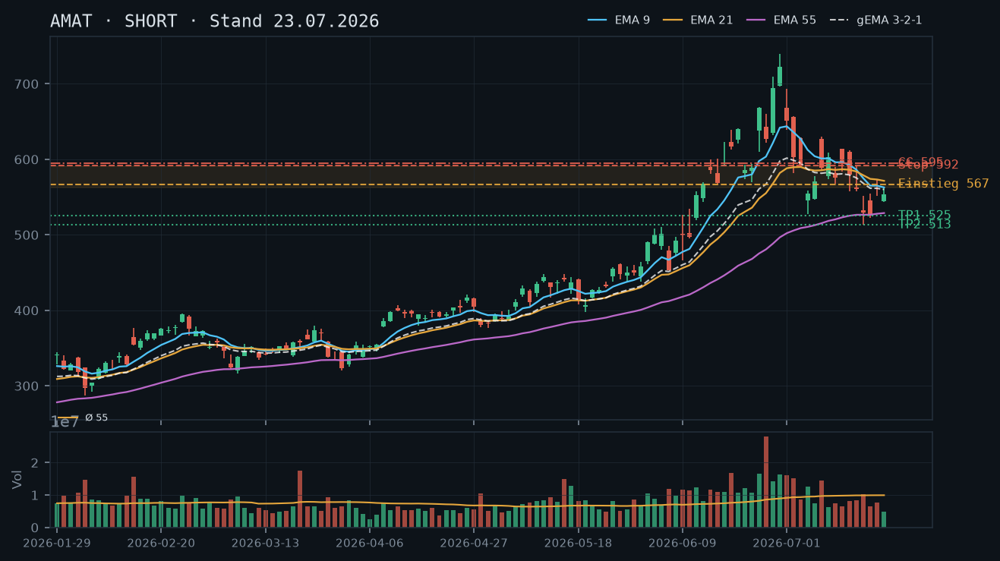
AMAT konsolidiert nach dem Abwärtsdruck der Vorwochen in einer engen Range um 525–565 – der EMA-Verbund bleibt bärisch, ein technischer Bounce bietet weiterhin Short-Einstiegs- und Naked-Call-Opportunitäten im Widerstandsbereich.
CRV 2.0 : 1 (bei Einstieg 567, Stop 592, Ziel 517)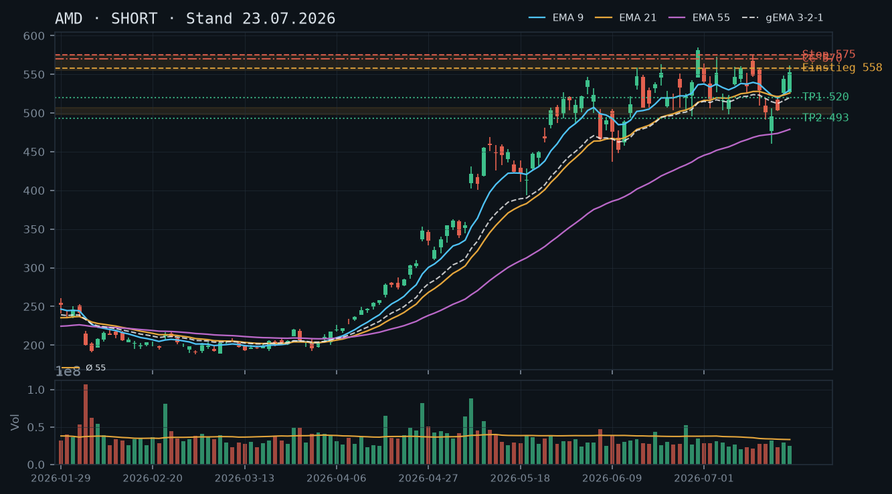
AMD erholt sich kräftig vom 460er-Tief zurück über 550, aber der übergeordnete Impuls-Bruch der 498–507-Zone ist strukturell relevant – die Erholung ist bislang ein Pullback in Widerstandszone, kein Trendwechsel; Short-Bias bleibt.
CRV 1,9 : 1 (Ziel 1 bei 520) / 3,3 : 1 (Ziel 2 bei 493)
AMZN bricht am 23.07. intraday mit -2,03% auf 239,87 USD deutlich unter die EMA-Cluster-Zone (245–247) ein – die Long-These der Voranalysen ist damit vorerst invalidiert, das Primärziel 262,00 bleibt unerreicht, und die Aktie steuert auf die erste kritische Support-Zone bei 232–238 zu.
CRV Kein direktionaler Trade mit gutem CRV auf aktuellem Niveau identifizierbar – abwarten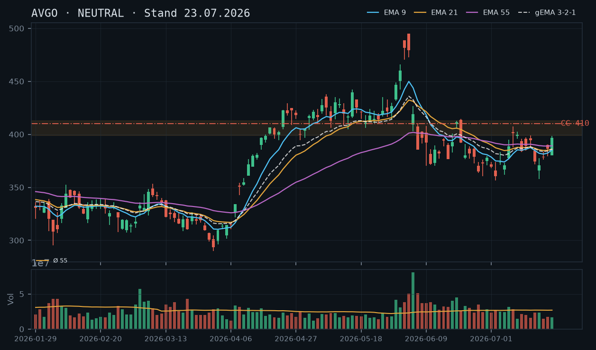
AVGO testet mit dem gestrigen Ausbruchsversuch (Hoch 398,59) exakt den Widerstandscluster 399–402, ohne ihn zu schließen – der EMA-Verbund dreht erstmals nach oben, doch ohne Volumen-Bestätigung bleibt der Bias neutral mit leichter Long-Neigung.
CRV —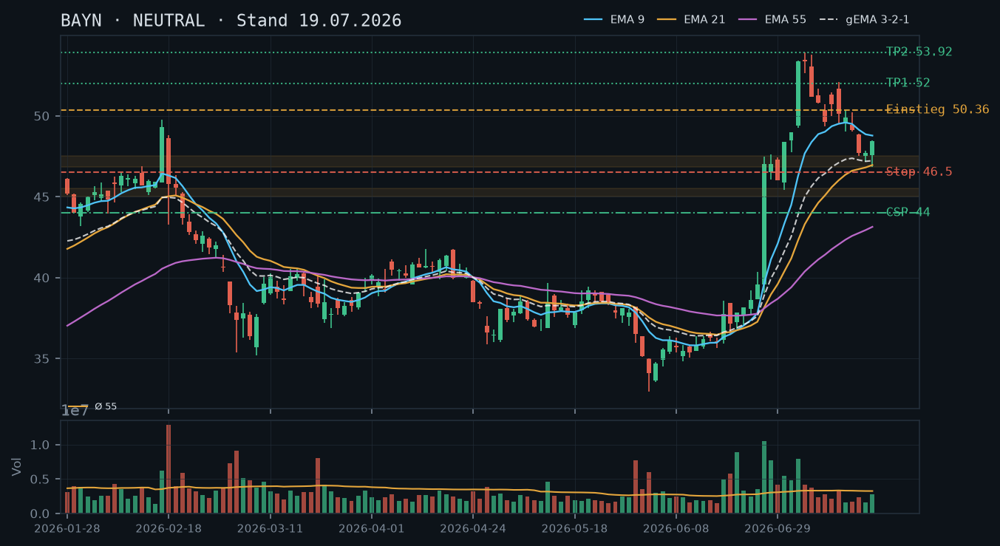
BAYN stabilisiert sich nach der Korrektur vom ATH (53,92) oberhalb der Gap-Zone um 45,00–45,50 – kein klares direktionales Setup, aber ein defensiver CSP unterhalb der Konsolidierungszone bleibt konstruierbar, während ein CC mangels Aktienbestand und wegen offenem ATH-Potenzial nicht empfohlen wird.
CRV ca. 2.0 : 1 (nur bei Bestätigung über 50,36)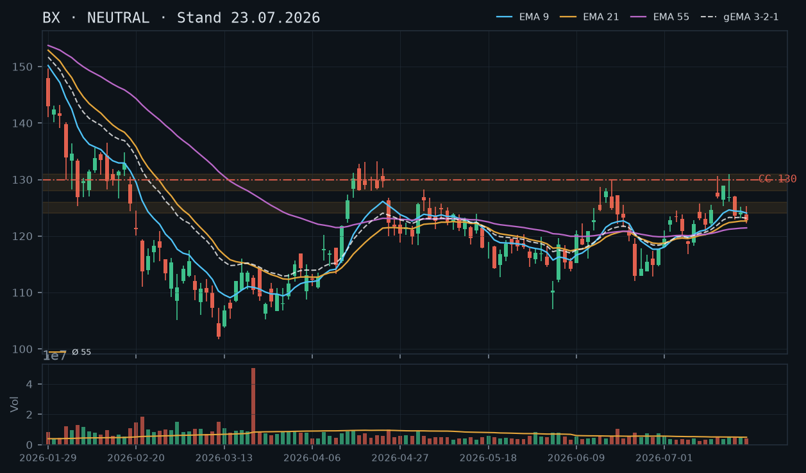
BX hat nach dem Post-Earnings-Hoch bei 131 eine klare Korrektur eingeleitet – der Kurs notiert wieder unter dem EMA9 und nähert sich dem kritischen Ausbruchsniveau 124–126, das nun als Schlüssel-Support getestet wird.
CRV None
CAT hält sich in einem intakten Abwärtstrend mit fallenden EMAs und gescheitertem Erholungsversuch – der Short-Bias der Voranalysen bleibt vollumfänglich gültig, ein Naked Call oberhalb des Widerstands ist das einzige vertretbare Stillhalter-Setup.
CRV 1.05 : 1 (primär) / 2.09 : 1 (Ziel 2 bei 775)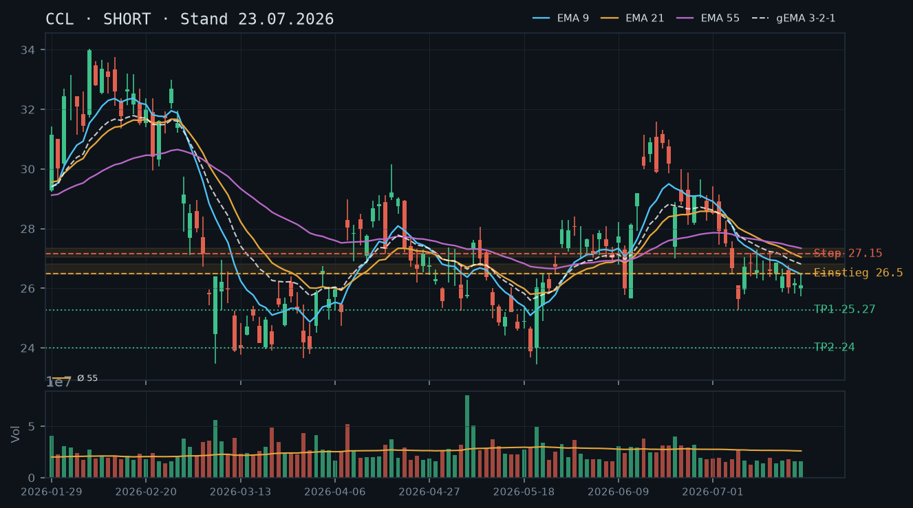
CCL bleibt im strukturellen Abwärtstrend unter allen drei EMAs – die Erholung Mitte Juli ist vollständig abverkauft, der Kurs nähert sich dem Juli-Tief bei 25,27 bei weiterhin unterdurchschnittlichem Volumen; Short-Bias bestätigt, kein Stillhalter-Setup ohne Aktienbestand möglich.
CRV 1,9 : 1 (Ziel 1) / 3,8 : 1 (Ziel 2)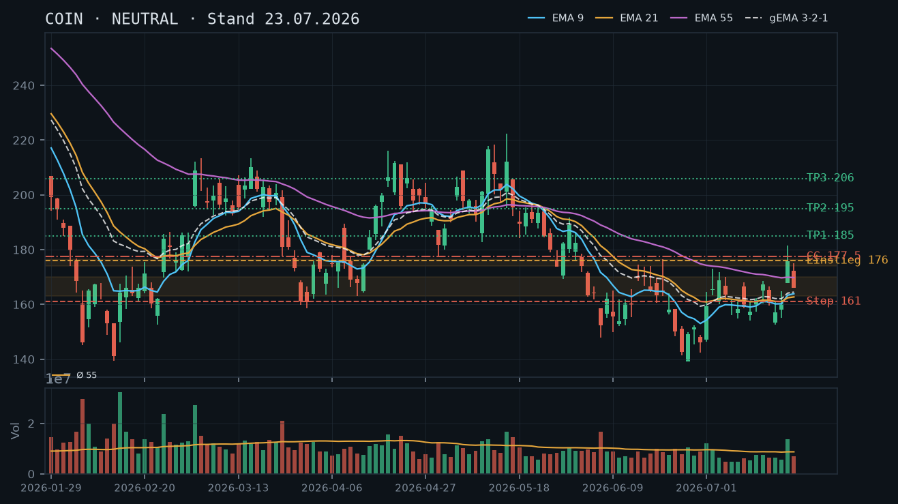
COIN hat nach dem bullischen Ausbruch am 21. Juli (rel. Volumen 1.57x, Hoch 181.49$) wieder zurückgesetzt – die Trendwende-Bestätigung über 170$ wurde zwar intraday geholt, aber nicht gehalten; der CC aus der 19.07.-Analyse ist abgelaufen, nun bietet sich ein neuer Covered Call auf den bestehenden 800er-Bestand an.
CRV 2.5 : 1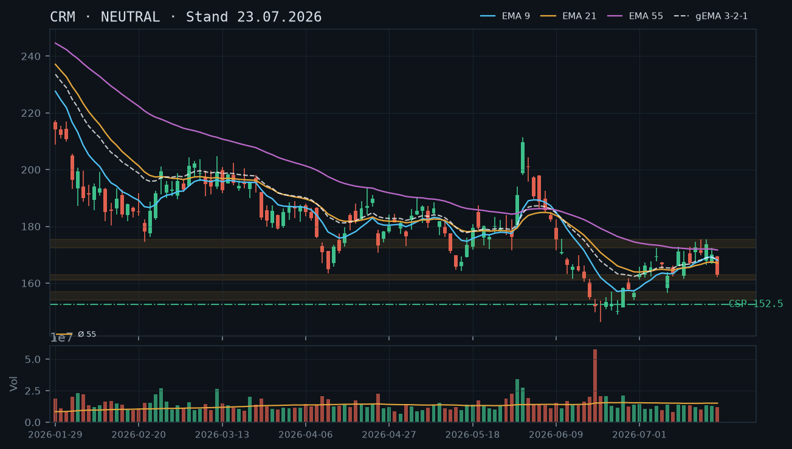
CRM bricht am 22.07. mit einem Bearish Engulfing klar unter den EMA9/21-Cluster (~168) und testet damit die kritische Unterstützungszone 161–163 – das Long-Bias der Voranalysen ist vorerst neutralisiert, der CC 182,50 (Verfall 25.07.) ist wertlos verfallen bzw. steht kurz davor, der Bestand bleibt long und wartet auf Stabilisierung.
CRV n/a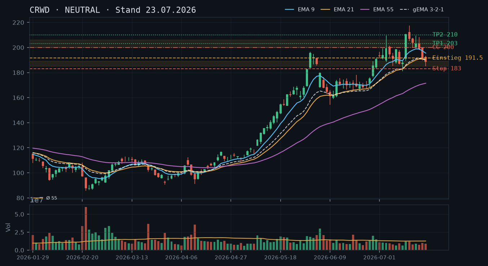
CRWD hat nach dem Juli-Spike eine klare Korrektur eingeleitet – die bullische Struktur ist noch intakt, aber der Kurs testet kritische Support-Zonen; der Short Put 180 läuft morgen aus und ist top-of-mind.
CRV Kein aktiver Neueinstieg – laufende Position; bei Reversal-Einstieg 191: CRV ~2,0:1 bis Ziel 203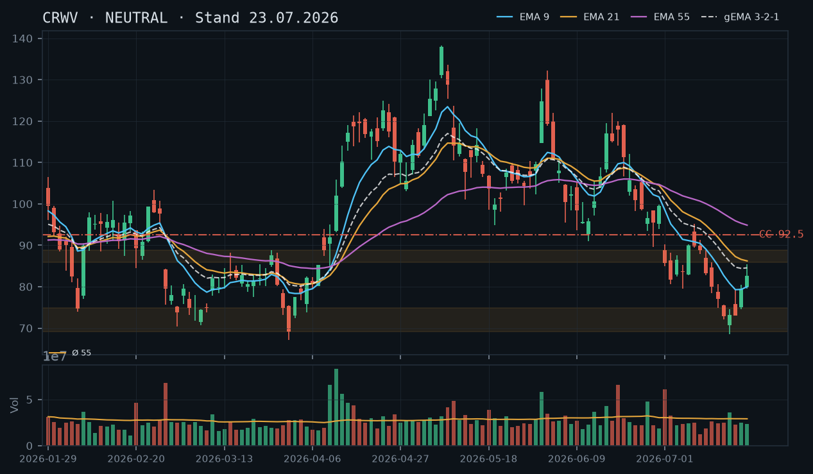
CRWV erholt sich kräftig aus der März-Zone – der Rebound läuft, EMAs drehen noch nicht, aber der Kurs nähert sich dem Widerstandscluster 85–88: Covered Call auf den Aktienbestand ist das klare Gebot der Stunde.
CRV –
DELL hat am 22. Juli mit einem explosiven Anstieg von 404 auf 442 USD (rel. Volumen 0,78x – kein Volumen-Breakout) den EMA9 zurückerobert und die Widerstandszone 430–444 USD von unten angekratzt – der Short-Bias der Voranalysen wird damit kurzfristig herausgefordert, aber noch nicht gebrochen.
CRV Long ca. 1,5:1 (zu 465) / Short ca. 1,5:1 (zu 391) – beide erst nach klarem Trigger aktiv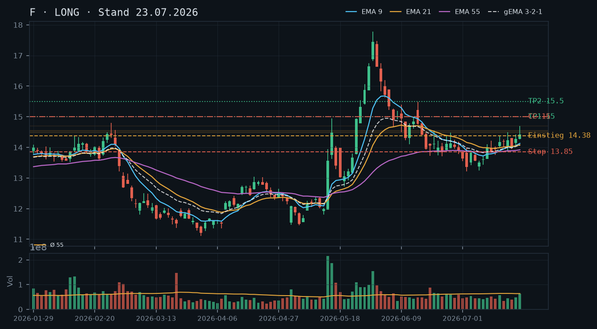
F setzt den Ausbruch fort und drückt am 22.07. auf rel_volumen 0,97 das Tageshoch auf 14,70 – das nächste Kursziel 15,00 rückt in Griffweite; der Covered Call bleibt das Kerninstrument, ein neuer CC auf den 15,00er-Strike ist nach dem Ablauf des 25.07.-Verfalls fällig.
CRV 2,6 : 1 (Erstziel ab 14,38) / 4,7 : 1 (Hauptziel)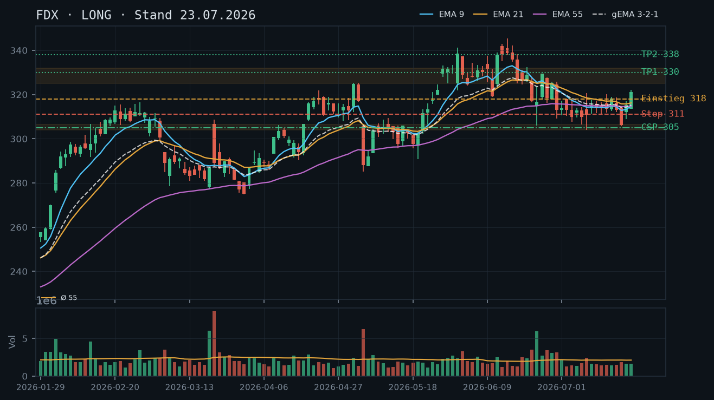
FDX bricht am 22.07. mit erhöhtem Volumen über das Rejection-Level 320,16 hinaus auf 321,02 und liefert damit den lang erwarteten technischen Range-Break – der erste valide Long-Trigger seit Monaten.
CRV Setup A (ab 321, Stop 311, Ziel 330): CRV ~0,9:1 – nur bei Pullback-Einstieg sinnvoll; Setup B (ab 321, Stop 311, Ziel 338): CRV ~1,7:1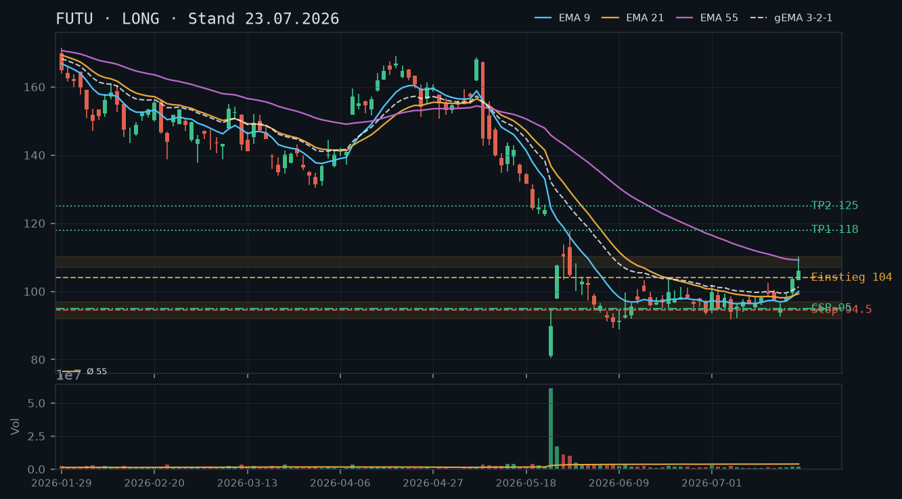
FUTU zeigt nach dem katastrophalen Mai-Crash eine konstruktive Bodenbildung mit frischen Ausbruchssignalen – der EMA9 kreuzt den EMA21 aufwärts und der Kurs testet die 107er-Marke, was selektive Stillhalter-Entries auf der Long-Seite rechtfertigt.
CRV ca. 2.0 : 1 (abhängig vom Einstiegsniveau)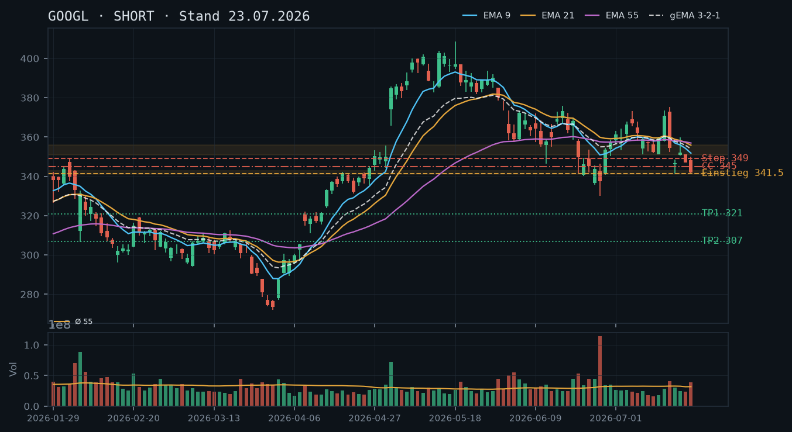
GOOGL bricht am 23.07. mit -4% auf 328,49 unter das Sommer-Tief 341,36 ein – die gesamte Rally-Struktur seit März kollabiert, alle EMAs fallen, kein CSP-Fundament in Sicht; Short-Bias dominiert, der CC auf den Aktienbestand ist das einzig valide Instrument.
CRV Bounce-Short ab 341: Stop 349 → Ziel 321: CRV 2,5 : 1 / Ziel 307: CRV 4,3 : 1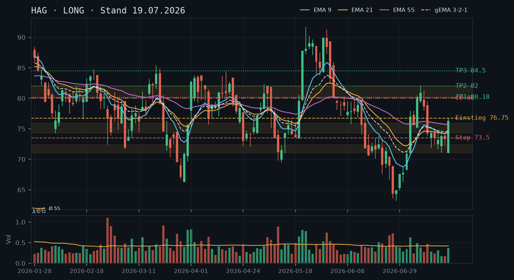
HAG hat am 17.07. mit einer starken Bullish-Engulfing-Kerze aus dem Range-Boden abgedreht und testet nun den EMA55-Widerstand – der erste echte Ausbruchsversuch seit der Konsolidierungsphase, der ein Long-Bias und einen Covered Call auf die bestehende Position rechtfertigt.
CRV Ziel 1: ~1,3:1 / Ziel 2: ~2,1:1 (bei Einstieg ~76,35, Stop 73,50)
HPE zeigt nach dem Bounce von 41 USD einen überraschend starken Aufwärtsimpuls mit zwei bullischen Tageskerzen und Kursanstieg auf 48,41 USD – der Short-Bias der Voranalysen wird zunehmend herausgefordert, solange der Kurs unter 50–51 USD bleibt jedoch kein Trendwechsel bestätigt.
CRV n/a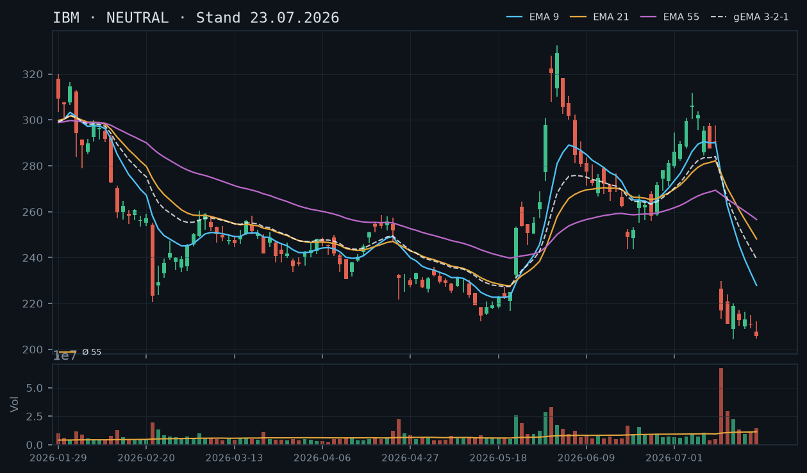
IBM konsolidiert auf tiefem Post-Crash-Niveau ohne bestätigte Unterstützung – der bestehende Short Put 195 läuft morgen aus und ist bei 5,6% Puffer noch komfortabel, aber ein neues Stillhaltergeschäft ist ohne belastbare technische Basis nicht vertretbar.
CRV None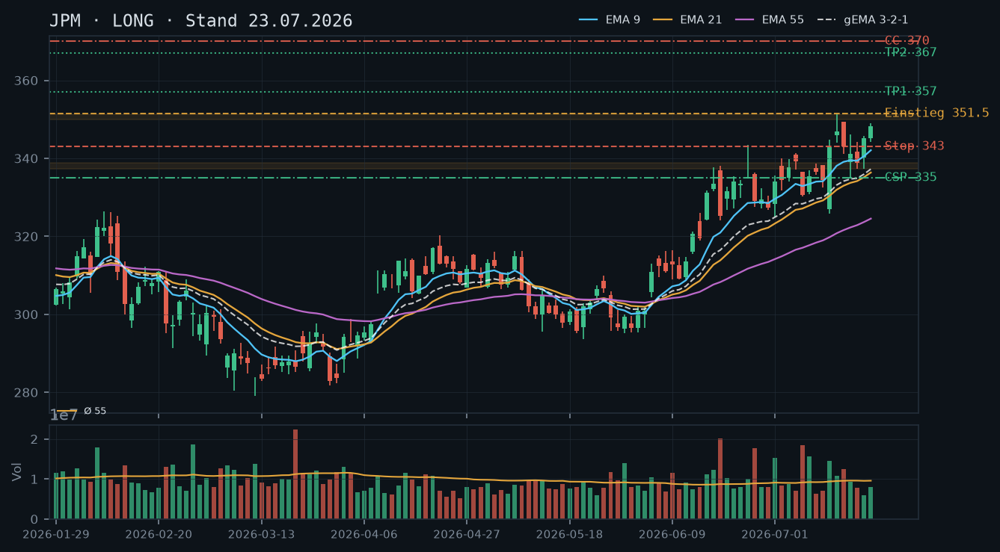
JPM testet aktuell zum zweiten Mal das Allzeithoch bei 351,24 nach einer durch die Zone 337,30/338,87 bestätigten Konsolidierung – die bullische EMA-Struktur bleibt intakt, allerdings läuft der aktuelle Anstieg mit unterdurchschnittlichem Volumen, weshalb ein bestätigter Ausbruch abgewartet werden sollte.
CRV 1.8 : 1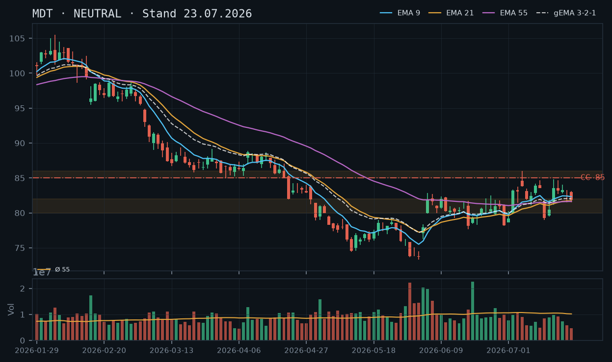
MDT pausiert nach der Juli-Rallye in einer engen Konsolidierung knapp unter dem 82er-Niveau – kein neues Setup, aber der Covered Call auf den 85er oder 86er Strike bleibt das klare Stillhalter-Instrument für die bestehende Long-Aktienposition.
CRV n/a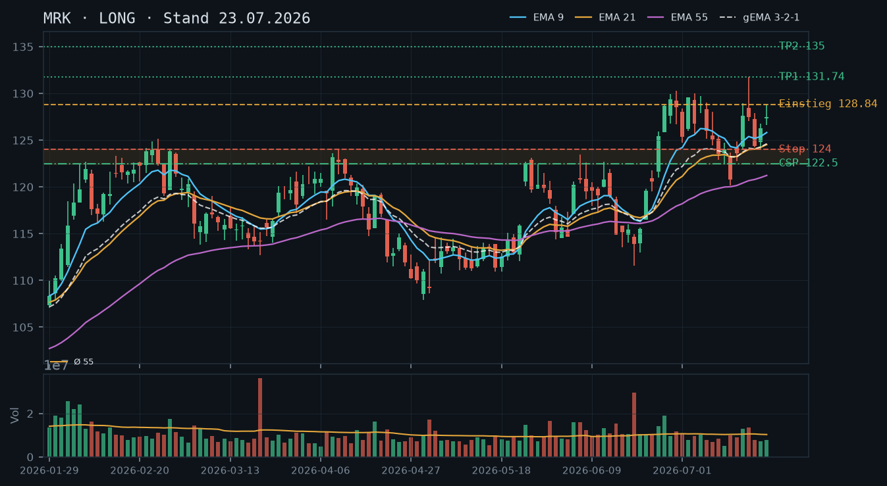
MRK hält nach dem Pullback vom Hoch (131,74) die bullische Struktur oberhalb EMA9/21 – der Trend ist intakt, ein frischer CSP auf technisch abgeleitetem Support bietet sich an.
CRV 2.8 : 1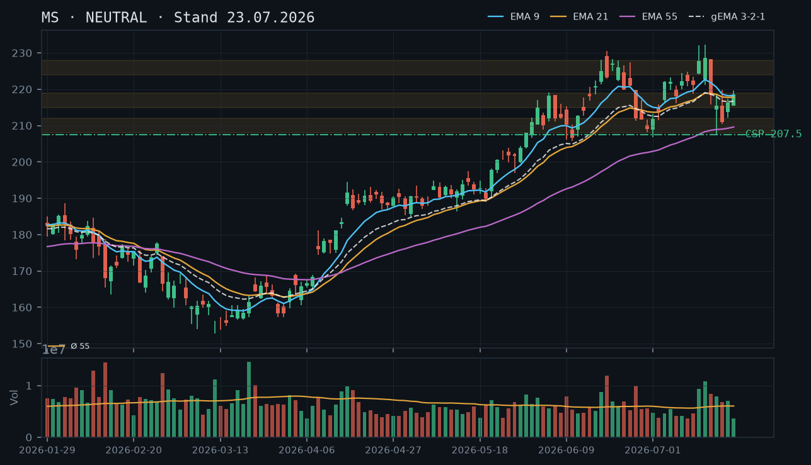
MS stabilisiert sich nach dem Post-Earnings-Reversal in der Zone 215–219 $, beide bestehenden Short Puts (205 / 210, Verfall 24.07.) sind mit 1 DTE und minimalen Restwerten praktisch am Ziel – Fokus liegt auf dem Aufbau des nächsten CSP-Setups nach dem morgigen Verfall.
CRV —
MSFT dreht nach dem Scheitern an der 401-Widerstandszone mit zwei schwachen Kerzen wieder nach unten – der EMA-Verbund komprimiert, der Ausbruch vom 15.07. wird zunehmend in Frage gestellt; kein frisches Long-Setup, Stillhalter-Fokus auf CC zur Risikosteuerung des Bestands.
CRV –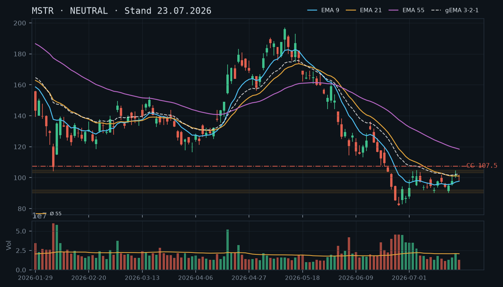
MSTR konsolidiert weiterhin in der fragilen 90–105-Zone mit bearisher EMA-Staffelung – die Erholung vom Crash-Tief (81,81) wirkt stabil, aber das Volumen bleibt schwach; ein Covered Call auf den Aktienbestand ist das einzige vertretbare Stillhalter-Geschäft.
CRV Beide Szenarien nur bei klarer Bestätigung auslösbar – kein bevorzugtes Setup heute
MU zeigt nach dem Tief bei ~804 USD (17.07.) eine deutliche Erholung auf 992 USD – der Kurs testet jetzt die kritische EMA9/EMA21-Konfluenz und den Widerstandsbereich 960–1.000 USD; die Short-These der Vorgänger-Analysen wird partiell falsifiziert, aber noch kein sauberer Trendwechsel bestätigt.
CRV –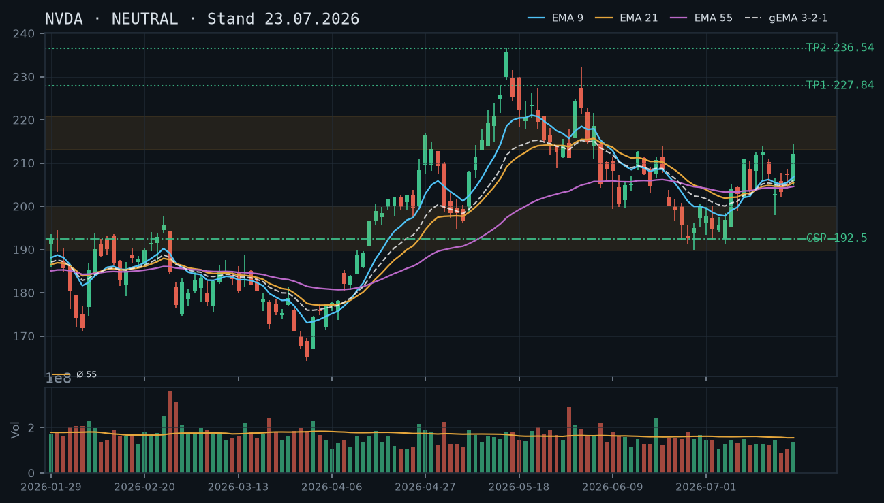
NVDA hat gestern mit rel. Volumen 0,89 die Mai-Widerstandszone 213–220,78 von unten angetestet (Tageshoch 214,39), dreht heute vorbörslich wieder zurück – die Range zwischen Junizone ~192–200 und Maiwiderstand bleibt strukturell intakt, kein Richtungsbruch in Sicht.
CRV Long ~1,6:1 (Ziel 1) / ~3,4:1 (Ziel 2) / Short ~2,0:1 (Ziel 1) – alle erst nach Bestätigung aktiv
NVO hält den Aufwärtstrend intakt und testet nach dem erfolgreichen Ausbruch über 50.90 nun das nächste Ziel bei ~55 – der Covered-Call-Fokus ist angesichts des Aktienbestands das primäre Stillhalter-Instrument.
CRV 2.1 : 1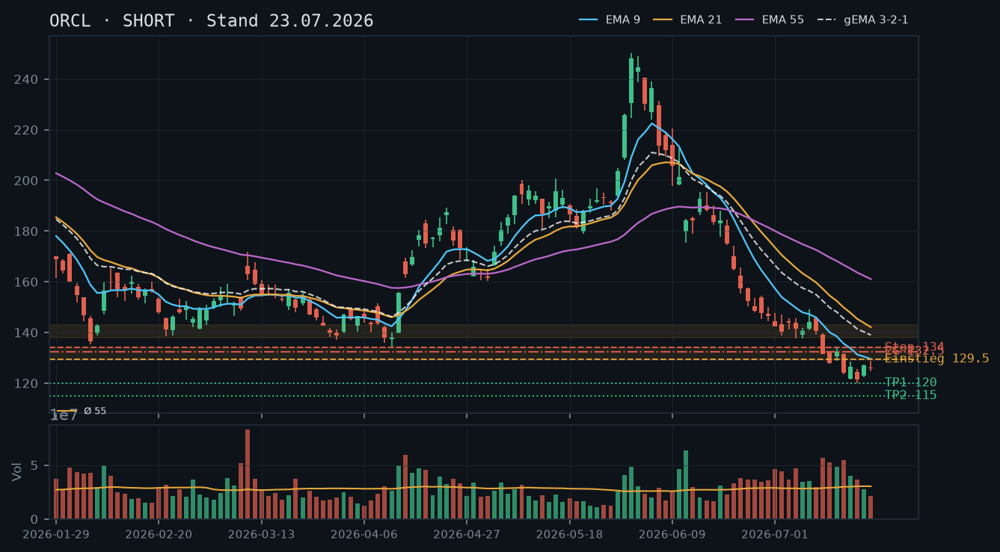
ORCL im intakten Abwärtstrend – Kurs bei 126,62 USD, alle EMAs fallen steil, kein technischer Boden bestätigt; Short-Bias bleibt die einzig konsistente Haltung, der Short Put 117 / 24.07. läuft morgen aus und ist mit Abstand zum Strike komfortabel.
CRV 3.2 : 1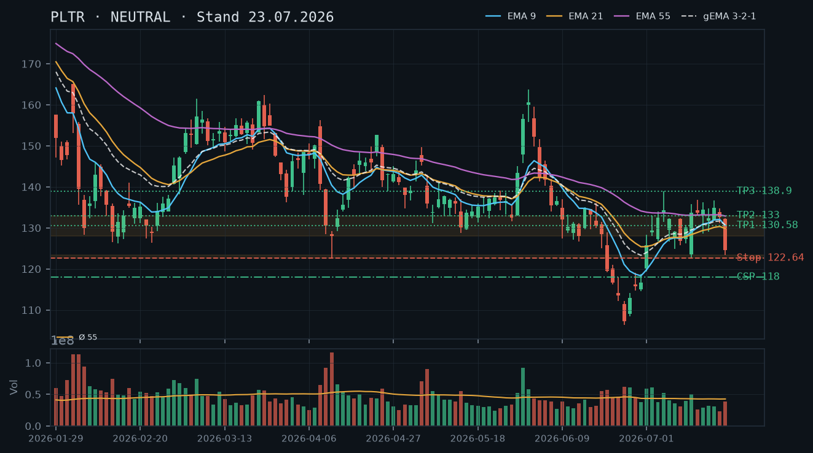
PLTR bricht am 22.07. mit einer langen roten Kerze unter die Konsolidierungszone 128–134 ein und testet die kritische Support-Basis 122–126; der bestehende Short Call 143 (Verfall morgen, 24.07.) verfällt wertlos – neues Direktional-Setup erst nach Stabilisierung abwarten.
CRV n/a – kein Einstieg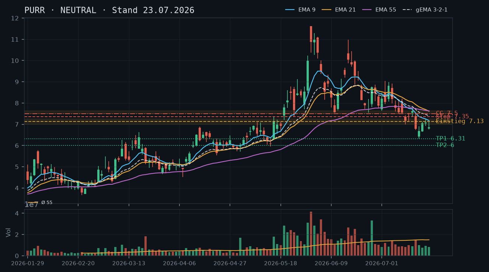
PURR pendelt seit dem Tief bei 6,31$ (17.07.) in einer engen Range zwischen 6,68$ und 7,25$ ohne Volumen-Bestätigung – der Abwärtstrend ist strukturell intakt, aber der Kurs zeigt erste Stabilisierungsansätze, die noch keine klare Richtungsentscheidung erlauben.
CRV 2.5 : 1 (zum Ziel 6,31) / 3.5 : 1 (zum Ziel 6,00)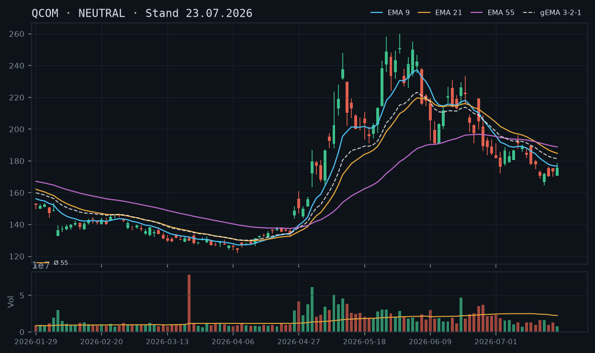
QCOM zeigt erste Stabilisierungsansätze nach dem langen Abwärtstrend, aber noch keine bestätigte Trendwende – Stillhalter-Setup noch nicht reif, Setup-Qualität bleibt unter Short-Schwelle.
CRV –
RHM bleibt im intakten Abwärtstrend mit fallenden EMAs und schwacher Erholung – das Short-Bias aus der Voranalyse vom 10.07. wird bestätigt, kurzfristige Stabilisierungsversuche ändern nichts am Gesamtbild.
CRV 2,4 : 1 (zum Primärziel 930, Stop 1.050)
SPCX befindet sich weiterhin im freien Fall – neue ATLs täglich, EMA-Fächer vollständig bärisch, kein technischer Support in Sicht; der bestehende Short Put 100 / 31.07. liegt mit 16,2% Puffer komfortabel, sollte aber engmaschig überwacht werden.
CRV 2,0 : 1 (Ziel 1) / 3,3 : 1 (Ziel 2)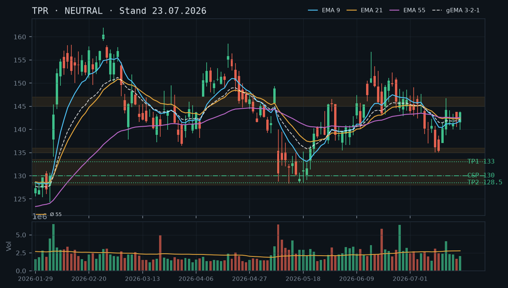
TPR bricht intraday mit -3,4% unter den EMA-Cluster und testet die Juli-Tiefzone – der CSP bei 135 aus der 19.07.-Analyse steht unter Druck; kein neues direktionales Setup, aber ein überarbeiteter CSP tiefer in der Struktur ist vertretbar.
CRV Short ~2,5:1 / Long ~2,0:1 – beide nur bei Triggerbestätigung valid
TSLA bricht mit -5,82% auf 352,25 brutal durch das dreifach bestätigte Junitief-Cluster – der Short Put 360 (Verfall morgen) ist tief im Geld und erfordert sofortiges Handeln, während der Short Call 400 wertlos verfällt.
CRV Pullback-Einstieg ~368: Ziel 340 → ~1,8:1 / Ziel 337 → ~2,0:1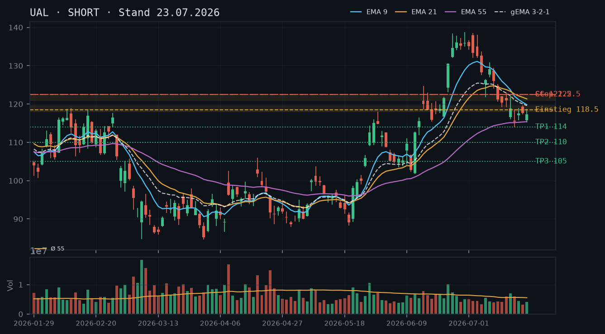
UAL setzt die strukturelle Korrektur fort – nach Bruch der 119er-Zone und gescheiterter Erholung zeigt der Kurs bei 116,62 keine Stabilisierungszeichen; alle EMAs fallen, der gema_321 fungiert als dynamischer Deckel, Short bleibt die trendkonforme These.
CRV 2,1 : 1 (Ziel 1) / 3,2 : 1 (Ziel 2)
UNH konsolidiert nach dem Earnings-Gap (16.07.) weiterhin im Bereich 418–437 ohne klare Richtungsentscheidung – kein valides direktionales Trade-Setup, aber ein technisch sauber ableitbarer CSP unterhalb der Post-Earnings-Unterstützung ist vertretbar.
CRV None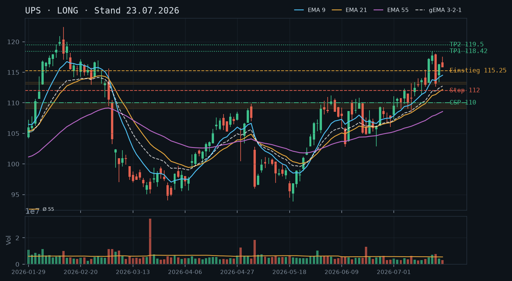
UPS konsolidiert nach dem Momentum-Hoch vom 17.07. bei 118,42 konstruktiv zwischen 113–117, die EMA-Struktur ist bullisch intakt – ein gesunder Pullback ohne Trendbruch, der frische Stillhalter-Einstiege auf tiefem Niveau ermöglicht.
CRV 1.9 : 1 (Einstieg 115,25, Stop 112,00, Ziel 119,50)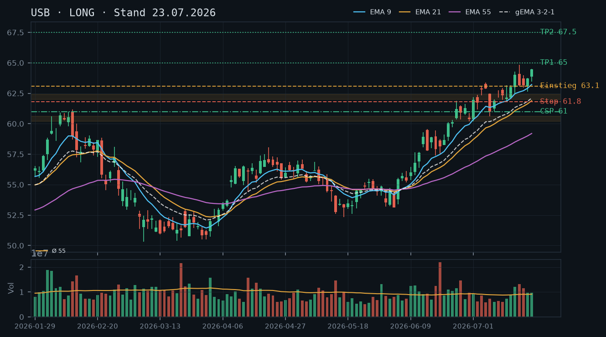
USB setzt den Aufwärtstrend nach den Q2-Earnings fort, konsolidiert eng unter dem Allzeithoch bei 64,84 auf erhöhtem Volumen – der Trend ist klar bullisch, ein CSP unterhalb der 62/61-Zone bleibt das bevorzugte Stillhalter-Setup.
CRV 2.2 : 1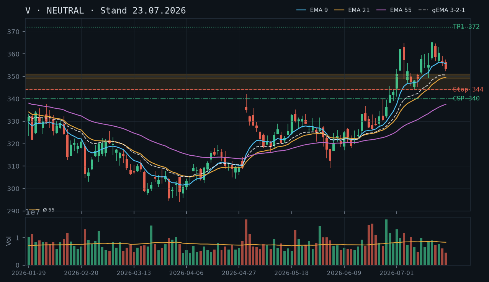
V konsolidiert nach dem Hochpunkt bei 365.14 USD (16.07.) in einem geordneten, aber zunehmend ermüdenden Pullback – die Trendstruktur ist intakt, doch der dreitägige Rücksetzer unter rückläufigem Volumen warnt vor voreiligem Long-Einstieg; das CSP-Setup bleibt der primäre Hebel.
CRV ~1.8 : 1 (bei Einstieg 358, Stop 348, Ziel 372 – noch nicht attraktiv genug für Einstieg)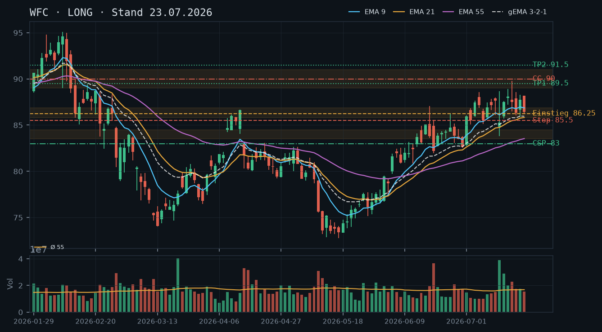
WFC konsolidiert auf hohem Niveau knapp unter dem Swing-Hoch bei 89,79 USD – der Aufwärtstrend ist intakt, die EMAs sind bullisch aufgestellt, und der IBKR-Aktienbestand von 200 Aktien ermöglicht erstmals den Einsatz von Covered Calls als primäres Stillhalter-Instrument.
CRV 2.5 : 1 (Pullback-Einstieg 86,25, Stop 85,50, Ziel 90,00)
WMT setzt den Abwärtstrend konsequent fort – nach dem Scheitern an der 117,18/118,09-Zone hat der Kurs zügig Richtung 107,25-Tief beschleunigt und schließt bei 109,33 mit intakter bärischer EMA-Struktur; Short-Continuation bleibt das favoritierte Setup, ein CSP ist mangels bestätigter Unterstützung weiterhin nicht darstellbar.
CRV 2,4 : 1 bis 107,25 / 4,3 : 1 bis 104,00 (beim Einstieg 112,00)